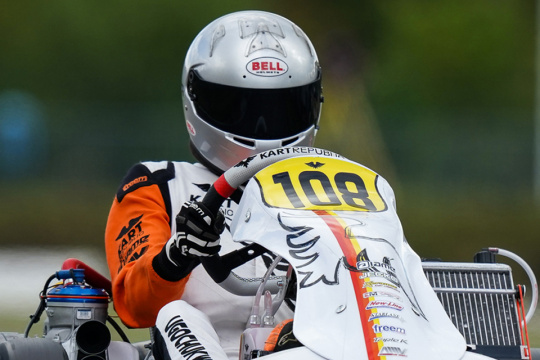
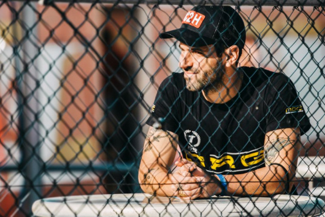

Vijesti
FIA Karting, Peter Bayer: «FIA Karting Regional Cups will facilitate access to major competitions
FIA Secretary General Peter Bayer has set the scene for the 2022 FIA Karting season by officially opening the new course that aims for a more inclusive karting movement. More...

Flashback Kerpen 2001: when Schumacher thrilled at the World Karting Championship
We have retrieved from our archives, on the occasion of Michael Schumacher's 53rd birthday, the article by Vroom in memory of the last round of the 2001 FSA World Championship held at Kerpen. More...

SKUSA abolishes the rule on bumpers: Video Marshaling system launched
Starting with next weekend's Homestead race, SKUSA introduces an epochal change to the pushback bumper regulation for all classes. In its place, a Video Marshaling System to officiate race incidents. More...

HIGHLIGHTS 2021 - McLaren option Ugo Ugochukwu 20 years after Lewis Hamilton
For some, the parallel with Lewis Hamilton is all too easy. But times and ways are different, and because today Formula 1 is much more present in karting than in Lewis' time. More...

Highlights 2021 - Alguersari: back to karting to smile again
Karting represents Motorsport’s most authentic nature, as testified by Jaime Alguersari's return to his first love, this years after abandoning F1, disillusioned, now back to karts to really enjoy himself. More...